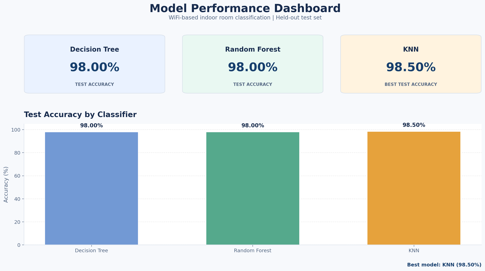
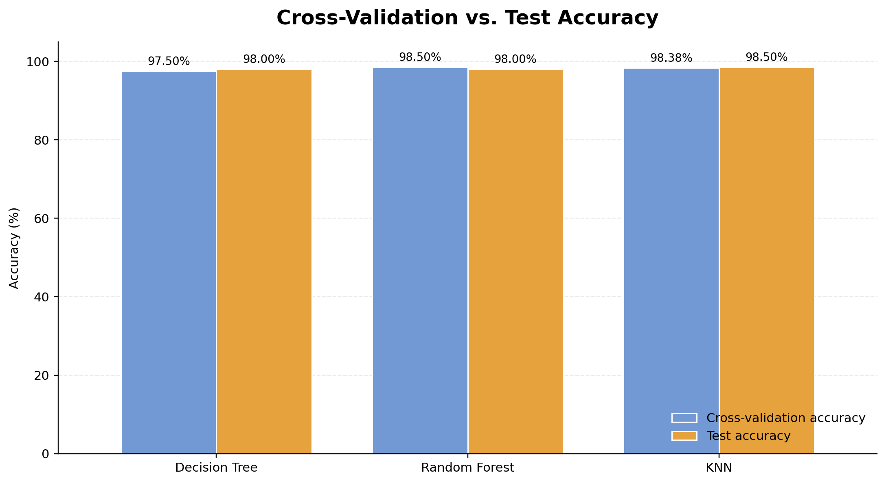
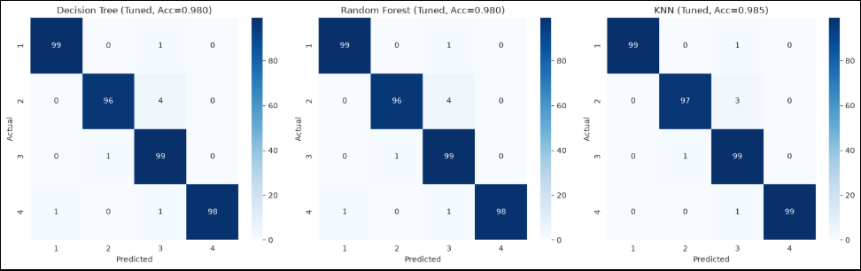
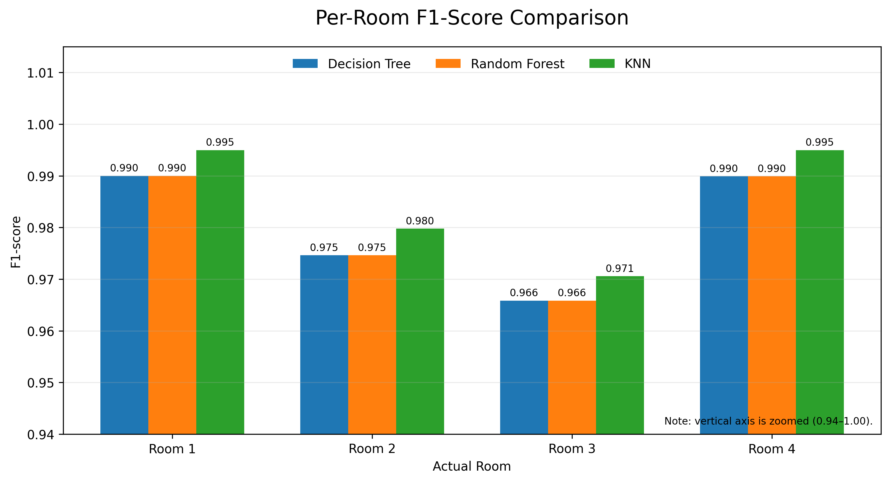
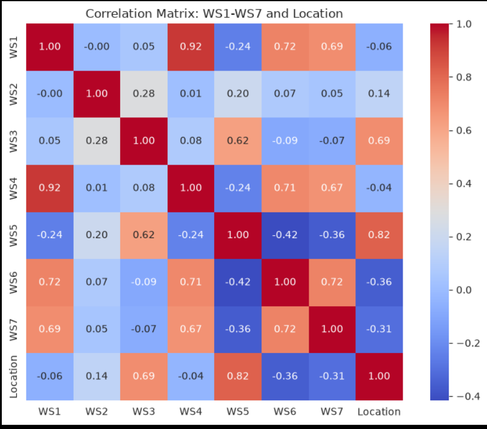
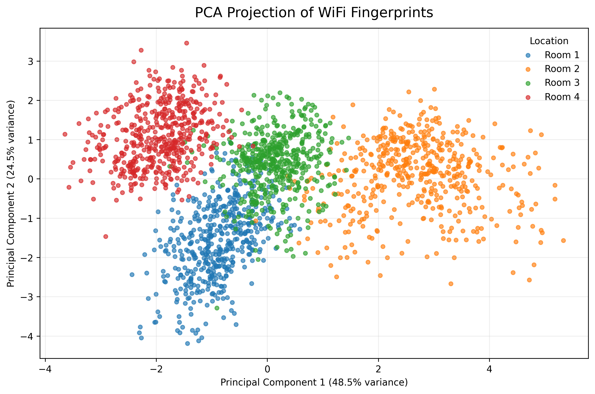
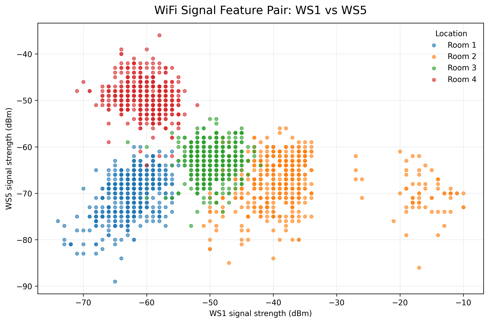
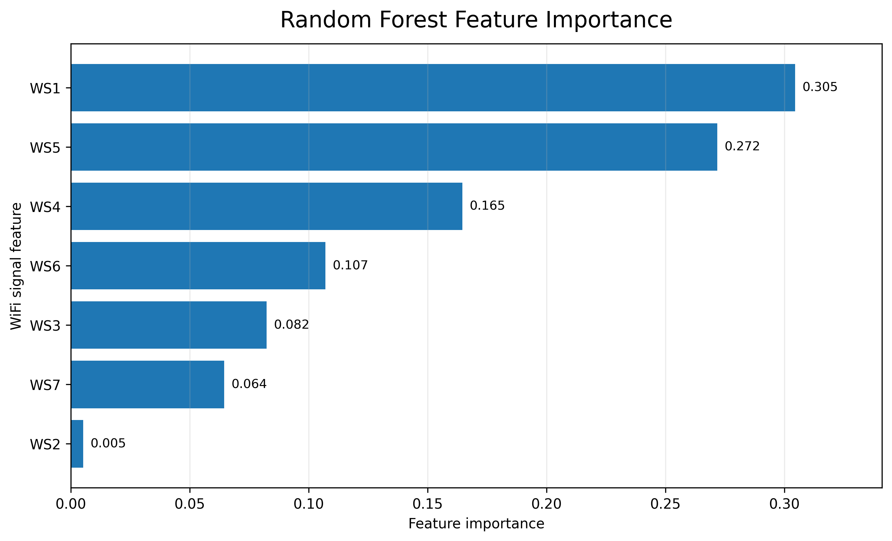

Model Performance Overview
The three classifiers achieved reported test accuracies of 98% or higher. K-Nearest Neighbors (KNN) achieved the highest reported test accuracy at 98.50%, while Decision Tree and Random Forest each achieved 98.00%.
The difference between KNN and the other two models is 0.50 percentage points. All three models performed strongly on the reported test set.
Classification Metrics
Accuracy measures the proportion of correct predictions. Precision measures how often predictions for a class are correct, while recall measures how many actual instances of that class are identified. The F1-score balances precision and recall.
| Model | Accuracy | Precision | Recall | F1-score |
|---|---|---|---|---|
| Decision Tree | 98.00% | 98.06% | 98.00% | 98.01% |
| Random Forest | 98.00% | 98.06% | 98.00% | 98.01% |
| KNN | 98.50% | 98.54% | 98.50% | 98.51% |
In the reported metrics, KNN has the highest accuracy, precision, recall, and F1-score. The values for Decision Tree and Random Forest are equal in this summary.

Model Generalization
The reported cross-validation and test accuracies are close for all three models. Random Forest has a cross-validation score 0.50 percentage points higher than its test accuracy, while KNN's test accuracy is 0.12 percentage points higher than its reported cross-validation score.
| Model | Cross-validation | Test accuracy |
|---|---|---|
| Decision Tree | 97.50% | 98.00% |
| Random Forest | 98.50% | 98.00% |
| KNN | 98.38% | 98.50% |

Prediction Performance by Room
The confusion matrices compare actual room labels with predicted room labels. Values on the main diagonal represent correct predictions, while off-diagonal values show misclassifications.
Read together, the three matrices show whether errors are concentrated in particular rooms. Use the displayed counts to identify the exact room pairs that are confused most frequently; overall accuracy alone does not reveal this.

Room-Level Classification Performance
The per-room F1-score comparison evaluates the balance between precision and recall for each room. It complements overall accuracy by showing whether performance differs across individual room classes.
KNN has the highest F1-score for all four rooms. Room 3 has the lowest F1-scores across the three models, while Rooms 1 and 4 are classified most strongly.

Understanding WiFi Fingerprints
The reported correlation analysis identifies WS5 and WS3 as the WiFi features with the strongest correlations with the encoded location label. The heatmap gives an overview of how each signal feature relates to the others and to the target label.
Correlation describes association, not causation, and it is not the same as a trained model's feature importance.

Visualizing WiFi Fingerprints with PCA
Principal Component Analysis (PCA) projects the seven WiFi signal features into two dimensions for visualization. Each point represents an observation, colored according to its room label.
In this projection, the first two principal components explain approximately 73.0% of the variance in the standardized WiFi features. The plot provides a compact view of patterns and overlap among room classes.
The axes represent combinations of WiFi measurements, not physical room coordinates. Because PCA retains only two components here, some information is not displayed.

Relationship Between WiFi Signals
This scatter plot compares two original WiFi signal features, WS1 and WS5. Each point represents an observation, and its color identifies the room label.
The point clouds show how these two measurements vary across the room classes. Any overlap indicates that this pair of features alone may not completely distinguish all rooms, which motivates using multiple WiFi features together.

Understanding Model Decisions
In the fitted Random Forest model, WS1 and WS5 have the highest feature-importance values, while WS2 has the lowest. This ranking describes how the model uses the WiFi features when making predictions.
Feature importance is model-specific and does not establish a causal relationship between signal strength and room location. Its ranking may differ from the correlation ranking because the two measures describe different things.
Summary
- KNN achieved the highest reported test accuracy at 98.50%.
- Decision Tree and Random Forest each achieved 98.00% reported test accuracy.
- Confusion matrices and per-room F1-scores provide additional insight into room-level classification.
- PCA and pairwise scatter plots visualize the structure of the WiFi fingerprints, while feature importance helps interpret the fitted Random Forest model.